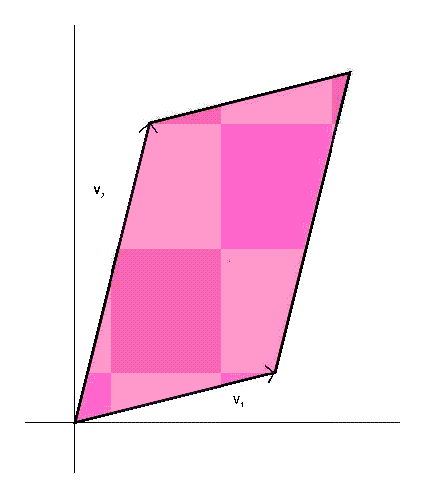

In this problem, we want to apply a linear transformation to warp an N dimensional volume.
Let Volume(v) denote the volume of the N dimensional parallelepiped
spanned by N, N dimensional vectors {v1,v2,...,vN}.
An example of a 2D volume spanned by 2, 2 dimensional vectors is shown below.
In a strange twist, we have decided to apply a "Linear GCD"
transformation. That is, if we represent our linear transformation f:RN->RN
by the matrix A, where R denotes the set of real numbers, then A(i,j) = gcd(i,j)
for 1 <= i,j <= N, where gcd(i,j) stands for the greatest common divisor of i and j.
Given, S, any set of N vectors of RN, such that Volume(S) is positive,
we ask you to compute the ratio of the volume after the transformation to the volume
before the GCD Transformation. In other words, compute r(S)=Volume(F(S))/Volume(S),
where F(S)={f(v) | v in S}.
However, since r(S) can be quite large, we only ask you to compute
T(S)=floor(r(S)) mod 4000039. In an even stranger twist, we will not give you S,
but instead ask you to compute, the mean value of T(S) over
all N vectors S of RN, such that Volume(S) is positive.

The input of each test cases is simply the value N(N<4000000) on its own line.
For each input value, output the answer rounded to an integer, followed by a newline.
10000
10001
2747606
295638
Problem setter: Josh Bao
Alternative Solution: Mike Liu